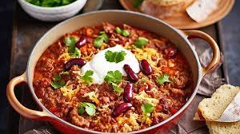

Chili Con Carne

Description
Chili Con Carne is a delicious and versatile dish.
My version contains beef mince, but you can use any protein.
When going vego, I have thrown in additional beans or meat-free
mince and it's worked great.
This is a second paragraph. Why does a description of a recipe
need a second paragraph? It doesn't! But I'm making a website.
Which is pretty much the same reason other sites pad out. More
SEO. More ad revenue.
Ingredients
- 500g Beef mince
- 1 Brown onion
- Garlic
- Paprika
- Ground chili
- Chili flakes
- Oregano
- Capsicum
- Zucchini
- Tinned tomatoes
- Tin of condensed tomato soup
- Red kidney beans (or black beans, or both)
- Tortilla chips
- Cheese
- Sour cream
Method
- Chop the zucchini, place it in a bowl with a little water, and microwave for 6 minutes.
- Drain the beans in a collander.
- Grate the cheese.
- Chop the capsicum, put aside. Chop the onion and garlic.
- Heat a drizzle of olive oil in a frying pan over a medium-high heat. Add the herbs and spices.
- After a minute, add the garlic and onion. Once onion is browned, add the beef mince.
- Once meat is cooked, add the vegetables, beans, tinned tomatoes and condensed tomato soup.
- Serve on a bed of tortilla chips, with a sprinkle of cheese and a dollop of sour cream.